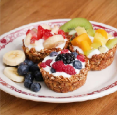
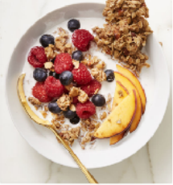
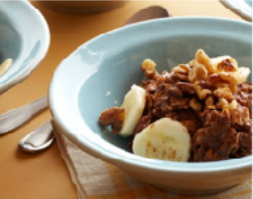
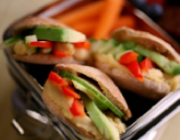
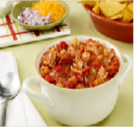
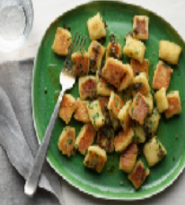
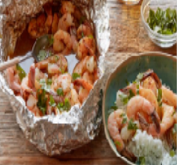
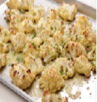

Healthy Recipes
Download the cookbook at this link or browse below.
Breakfast:
Easy Yogurt Oatmeal Cups

Ingredients:
- 1 banana, mashed
- 1⁄4 cup honey
- 1 teaspoon vanilla
- 1 teaspoon salt
- 1 1⁄2 cups oats
- 1 cup yogurt
Optional toppings:
- strawberry
- blueberry
- raspberry
- apple
- banana
- nuts
- mango
- kiwi
Directions:
- In a medium-sized bowl, mash a ripened banana until mostly smooth.
- Add honey and vanilla, stir.
- Add salt, and oats. Mix well.
- Press 2 tablespoons of mix into each cup, form a cup-shape.
- Refrigerate 0.5 hour and preheat oven to 350oF (180oC).
- Bake granola cups for 30 minutes
- Allow to cool for 5 minutes and add a tablespoon of yogurt to each cup along with any preferred toppings.
Sweet & Salty Maple Granola Bark

Ingredients:
- 2 tsp. vanilla extract
- 2 tsp. Maple syrup
- 1/2 c. olive oil
- 1 large egg white
- 3 c. old-fashioned oats
- 1 c. roasted, salted almonds,
- coarsely chopped
- 1/2 c. sunflower seeds
- 1/2 c. almond flour
- 1 1/2 tsp. ground cinnamon
- Milk and fresh fruit (such as berries and peaches), for serving
Directions:
- In a medium-sized bowl, mash a ripened banana until mostly smooth.
- Add honey and vanilla, stir.
- Add salt, and oats. Mix well.
- Press 2 tablespoons of mix into each cup, form a cup-shape.
- Refrigerate 0.5 hour and preheat oven to 350oF (180oC).
- Bake granola cups for 30 minutes
- Allow to cool for 5 minutes and add a tablespoon of yogurt to each cup along with any preferred
Banana Nut Hot Chocolate

Ingredients:
- 2 cups plain almond milk
- 2 fully-ripened large bananas (1 1/2 diced and 1/2 thinly sliced crosswise)
- 1/4 teaspoon pure almond extract
- 1/4 teaspoon pure vanilla extract Kosher salt
- 2 cups old-fashioned rolled oats
- 2 tablespoons unsweetened cocoa powder
- 2 tablespoons honey or agave
Directions:
- Bring the almond milk, 1 3/4 cups water, the diced bananas, almond and vanilla extracts and pinch of salt to a boil in a large saucepan over high heat.
- Stir in the oats, cocoa, powder, and 1 tablespoon of the honey and reduce the heat to medium.
- Cook, stirring frequently, until the oats are fully cooked to desired consistency, 6 to 7 minutes.
- Transfer to 4 bowls, top with the sliced bananas, walnuts, the remaining 1 tablespoon honey, cinnamon, and chocolate chipes and serve.
Lunch:
Veggie Stack Pita Pockets

Ingredients:
- 1 (15-ounce) can chickpeas or white beans, rinsed and drained
- 1 to 2 tablespoons water
- 2 teaspoons freshly squeezed lemon juice
- 1 teaspoon kosher salt, plus more for seasoning
- Pinch red pepper flakes
- 1/4 cup extra-virgin olive boilFreshly ground black pepper1 small cucumber, sliced or 1/2 bell pepper, seeded and sliced.
- 10 to 12 whole-wheat pita minis (3 inches).
Directions:
- Combine the chickpeas, water, cheese, lemon juice, salt and red pepper flakes in a food processor and puree until completely smooth, about 5 minutes. While the motor is running, pour in the olive oil and process until fully incorporated and velvety. Season with pepper, to taste.
- Spoon a scant tablespoon bean spread into toasted pitas. (Put remaining bean spread in an air-tight container.) Add cucumber slices, or other vegetables of choice and season, to taste, with salt and pepper. Wrap in parchment or butcher paper, and pack in a plastic container to keep from getting squished. Pack in a lunch box and send to school.
Chicken Chili

Ingredients:
- 4 cups chopped yellow onions (3 onions)
- 1/8 cup good olive oil, plus extra for chicken
- 1/8 cup minced garlic (2 cloves)
- 2 red bell peppers, cored, seeded, and large- diced
- 2 yellow bell peppers, cored, seeded, and large-diced
- 1 teaspoon chili powder
- 1 teaspoon ground cumin
- 1/4 teaspoon dried red pepper flakes, or to taste
- 1/4 teaspoon cayenne pepper, or to taste
- 2 teaspoons kosher salt, plus more for chicken
- 2 (28-ounce) cans whole peeled plum tomatoes in puree, undrained
- 1/4 cup minced fresh basil leaves
- 4 split chicken breasts (halal), bone in, skin on
Directions:
- Cook the onions in the oil over medium-low heat for 10 to 15 minutes, until translucent. Add the garlic and cook for 1 more minute. Add the bell peppers, chili powder, cumin, red pepper flakes, cayenne, and salt. Cook for 1 minute. Crush the tomatoes by hand or in batches in a food processor fitted with a steel blade (pulse 6 to 8 times). Add to the pot with the basil. Bring to a boil, then reduce the heat and simmer, uncovered, for 30 minutes, stirring occasionally.
- Preheat the oven to 350 degrees F.
- Rub the chicken breasts with olive oil and place them on a baking sheet. Sprinkle generously with salt and pepper. Roast the chicken for 35 to 40 minutes, until just cooked. Let cool slightly. Separate the meat from the bones and skin and cut it into 3/4-inch chunks. Add to the chili and simmer, uncovered, for another 20 minutes. Serve with the toppings, or refrigerate and reheat gently before serving.
White Chili
Ingredients:
- 1 medium onion, diced (about 1 1/2 cups)
- 2 stalks celery, diced (about 1/2 cup)
- 3 medium peppers (about 4 ounces each
- 1 clove garlic, minced
- 1 teaspoon ground cumin
- 1/2 teaspoon ground coriander
- 1/4 teaspoon cayenne pepper, more to taste
- 1 pound ground white meat turkey
- 2 (15.5-ounce) cans white beans such as cannelini, preferably low-sodium, drained and rinsed
- 4 cups low-sodium chicken broth
- 3/4 teaspoon dried oregano
- 1 (15.5-ounce) can hominy, drained and rinsed
- Salt
- 1/4 cup nonfat plain Greek-style yogurt
- 2 tablespoons chopped fresh cilantro leaves
Directions:
- Heat the oil in large pot or Dutch oven over moderate heat. Add the onion, celery, poblanos, and cook, stirring occasionally, until the vegetables are soft, about 8 minutes. Add the garlic, cumin, coriander and cayenne and cook, stirring, until fragrant, about 30 seconds.
- Add the ground turkey and cook, breaking up the meat with a spoon, until the meat is no longer pink about 2 minutes. Add the white beans, broth and oregano. Cook, partially covered, stirring occasionally, for 25 minutes.
- Add the hominy and salt and more cayenne pepper, to taste, and continue cooking, partially covered, 10 minutes longer. Ladle into individual bowls and top each serving with 1 tablespoon of yogurt and 1 1/2 teaspoons of cilantro. Garnish
Dinner
Couliflower Gnocchi

Ingredients:
- 2 large russet potatoes (about 1 1/2 pounds)
- 1/2 cup gluten-free all-purpose flour, plus more for dusting
- 1 medium head cauliflower, chopped into florets (about 1 pound)
- 1/4 cup grated Parmesan
- 1 large egg yolk
- Kosher salt and freshly ground black pepper
- 5 tablespoons unsalted butter, diced
- 2 tablespoons drained capers
- 1/4 cup fresh parsley, chopped
- Salad, for serving
Directions:
- Preheat the oven to 425 degrees F. Prick the potatoes all over with a fork and place on a baking sheet. Bake, flipping halfway through, until fork-tender, about 45 minutes. When the potatoes are cool enough to handle, cut them in half and carefully scoop the flesh into a large bowl. Meanwhile, fill a medium saucepan with 2 inches of water. Set a steamer basket insert into the pot and bring the water to a simmer over medium-high heat. Add the cauliflower, cover and steam until very tender and falling apart when pierced with a fork, 12 to 14 minutes. Drain the cauliflower and use clean kitchen towels to squeeze completely dry.Generously flour a work surface. Scoop a heaping 1/2 cup of dough onto the surface and roll into a 12-inch rope. Repeat with the remaining dough. Gently press the top of each gnocchi with a fork to make grooves.
- Melt 1 tablespoon butter in a small microwave-safe bowl in the microwave. Brush the gnocchi with the butter. Bake the gnocchi until cooked through and they spring back when pressed, 10 to 12 minutes. Melt the remaining 4 tablespoons butter in a large skillet over medium heat until brown bits start to form, 5 to 6 minutes. Remove from the heat, add the capers and stir until well combined. Toss the gnocchi in the brown butter and sprinkle with the parsley. Serve immediately with a salad on the side.
Healthy Butter Shrimp Foil Pack

Ingredients:
- 1 1/4 pounds peeled and deveined large shrimp
- 5 garlic cloves, smashed
- 2 teaspoons chipotle hot sauce, plus more to taste
- 2 teaspoons ground cumin
- 1 teaspoon dried oregano
- 1/4 teaspoon ground coriander
- 3/4 teaspoon kosher salt
- 1/2 cup Mexican-style lager, such as Corona
- 2 tablespoons unsalted butter, cut into pieces
- 1 lime, halved
Directions:
- Prepare a grill for medium heat. Lay out a piece of heavy-duty foil 12 inches by 18 inches. Fold the four sides up to create walls and spread the shrimp in the center of the foil. Toss the shrimp with the garlic, chipotle sauce, cumin, oregano, coriander and salt. Dot the butter pieces on top.
- Cover with another large piece of foil and crimp and fold the edges together to seal tightly.
- Transfer the foil pack to the grill, close the lid and cook until the shrimp are pink and cooked through, 4 to 6 minutes. Remove from the heat and let sit for a few minutes. Carefully tear the packet open, being careful not to let the escaping steam burn you.
- Squeeze lime juice over the shrimp and sprinkle with cilantro. Serve the shrimp with the rice and pass extra chipotle hot sauce on the side.
Parmesan Roasted Cauliflower

Ingredients:
- 1 large head cauliflower
- 3 tablespoons good olive oil
- Kosher salt and freshly ground black pepper
- 1 cup freshly grated Parmesan cheese (2 ounces)
- 1 cup freshly grated Gruyere cheese (2 ounces)
Directions:
- Preheat the oven to 350 degrees.
- Remove the outer green leaves from the cauliflower and cut the head into florets, discarding the stems. Place the florets on a sheet pan.
- Drizzle with olive oil and sprinkle generously with salt and pepper.
- Toss well. Bake for 30 minutes, tossing once, until the cauliflower is tender and starts to brown.
- Sprinkle with the Parmesan and Gruyere and bake for 1 to 2 more minutes, just until the cheese melts. Season to taste and serve hot or warm.